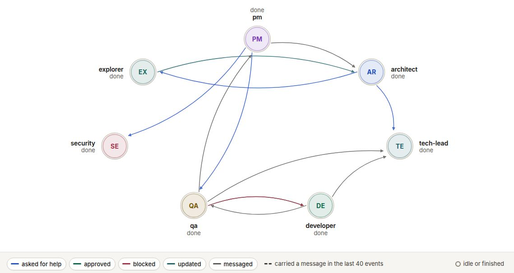
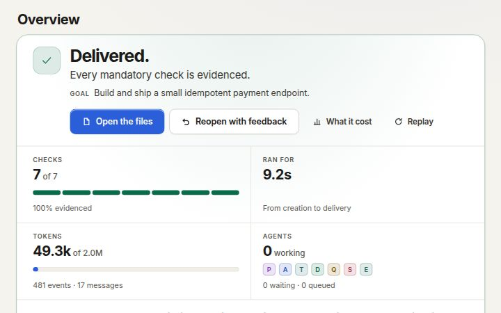
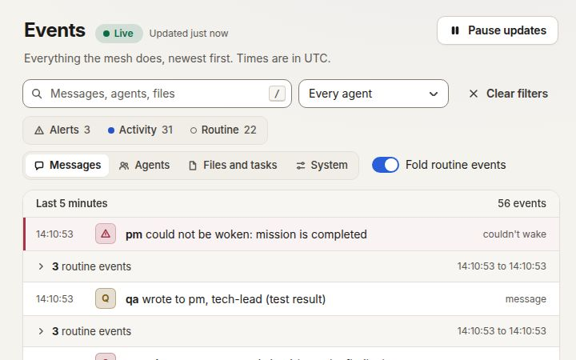
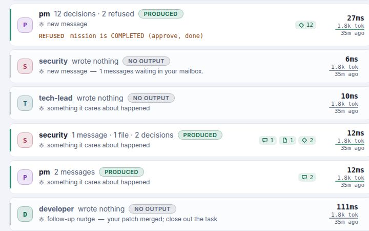
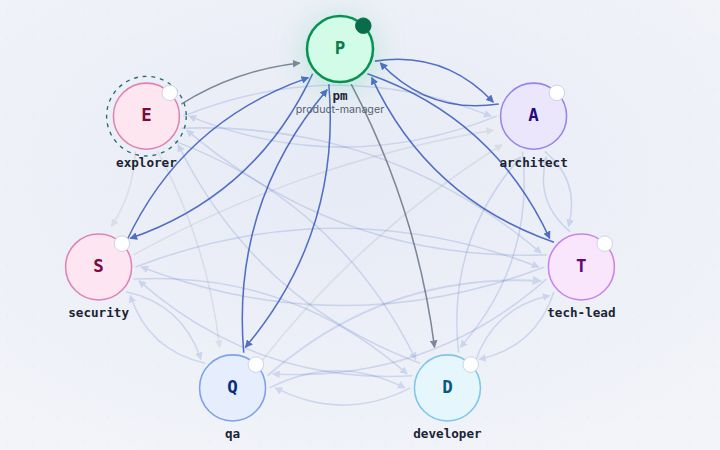
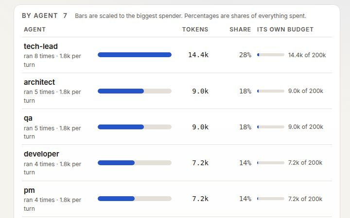
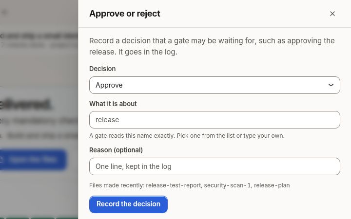

A runtime for persistent AI organizations
A team of AI agents, run like an organization.
Curule runs role-based agents (a product manager, an architect, developers, QA, security) on your own infrastructure. The runtime enforces who may approve what, every action is recorded and replayable, and the model is billed to you by your own provider.
Curule runs role-based agents (a product manager, an architect, developers, QA, security) as one organization. The runtime enforces who may approve what, and every action is recorded and replayable. Run it on your own infrastructure with your own model credentials, or open a workspace on Curule Cloud, where we run it and you bring your own model key.
The demo runs a scripted team on the real runtime: no API key, no account.
Curule Cloud is a flat monthly plan for hosting; the models are billed to you by your own provider. To run it yourself, try the demo: a scripted team on your own machine, with no API key and no account.
- Self-hostedOne container per team, on your infrastructure and with your model credentials.
- Yours to run, or oursOne container per team on your infrastructure with your own model credentials, or a workspace on Curule Cloud, where we run it and you bring your own model key.
- Nothing phones homeNo telemetry, no analytics, no update check, no licence server.
- Free to startThe Community plan: one open project, up to eight agents, no licence key.
- Source-availableBusiness Source License 1.1. Each version becomes Apache 2.0 four years after it is published.
Every capture on this page is of the scripted demo, which makes no model calls.
Why it is not a group chat
A team needs rules, not a longer prompt.
A single agent writes code. A team of them has to know who may approve a design, merge a change, block a release or spend the budget. Curule makes those rules part of the system instead of part of a prompt.
Enforced, not asked
An approval, merge or block that an agent is not allowed to make is refused by the runtime before it becomes an event. A prompt can be argued with; the kernel cannot.
Recorded and replayable
Every action is an event in an append-only log, and every screen is a view of it. Any run can be replayed to any moment and audited afterwards.
Bounded
Budgets per agent, thread and mission, and a host-wide spend ceiling that counts every token class. Usage reports (Team plan and above) show what each project, agent and model consumed.
Yours
One container per team, on your infrastructure, with your own model credentials. No telemetry, no licence server, no markup on the model.
How a mission goes
Three steps, and a person at the end.
Describe the team and the goal
Roles, what each may do, who may talk to whom, the gates a change must pass, and what “done” means as acceptance criteria. Or start from a shipped example.
The agents work through contracts
They wake on events they care about, exchange typed messages and versioned artifacts, review each other’s work, and escalate when they disagree or run out of budget.
You steer and you audit
The human is a seat in the team with the final say. Pause, approve, redirect, reopen. A mission is done when every criterion has evidence, not when an agent says so.

The console
What you see while it runs.
The console is a set of views of one event log. These are captures of the scripted demo, not mockups.
-

Mission control
Progress against the acceptance criteria, each with the evidence that satisfied it, and the artifacts the team produced.
-

Live events
Everything the mesh does, newest first, streamed from the append-only log. Filter down to alerts, and open a line to see what caused it.
-

Per-turn ledger
One row per agent turn: who ran, how long it took, what it produced or refused, and the tokens it used.
-

Team designer
Seats, authority, who may contact whom, gates and budgets, drawn as a graph and validated as you edit.
-

Cost and budgets
Tokens against the mission budget, by agent and by model. A host-wide spend ceiling parks every open project when its estimate is reached.
-

Approvals
You are a seat in the team. Record a yes or a no and any gate that listens for it can move: for example, a release that needs your approval.
Try it
Run the demo on your own machine, with no API key.
The demo runs a scripted team on the real runtime, so it needs no model and no credentials. It exists so that you can see the whole flow before you decide anything.
You need Docker and git. The first command uses openssl; any random string of 32 or more characters will do as the token.
There is no published container image yet, so the second step builds it from the source. Tagged releases will publish one.
-
Make a token, and keep it
The container refuses to start without one. You will paste it into the sign-in page.
export MESH_API_TOKEN="$(openssl rand -hex 32)" echo "$MESH_API_TOKEN" -
Build the image from the source
git clone https://github.com/salitaba/agent-mesh.git curule cd curule docker build -t curule . -
Start the demo
docker run --rm -p 127.0.0.1:7420:7420 -v mesh-demo:/data \ -e MESH_API_TOKEN="$MESH_API_TOKEN" \ curule demo -
Open it and press Start mission
Go to
http://127.0.0.1:7420and sign in with the token. Open the demo-stub project and press Start mission. Seven agents take a payment-API mission from requirements to a merged, reviewed, verified result, and QA blocks it once so you can see conflict handling.With your own credentials the same seats are real: add
ANTHROPIC_API_KEY(or Bedrock, Vertex or Foundry credentials), thencurule inita project.
Security
Security, stated plainly.
What it protects, what leaves your environment, and what it does not do. The agents run commands, so this is the part to read before you promise anything to anyone.
What it does
Refuses to listen on a network address without a strong token. Guards against cross-site and rebinding attacks. Sandboxes agent-written pages. Keeps the operator’s secrets out of the agents’ environment. Runs unprivileged with a read-only root, and ships a network policy for Kubernetes. Every control is pinned by a test.
What leaves your environment
Only the agents’ calls to the model provider you chose, with your credentials. Nothing goes to us: no telemetry, no analytics, no update check, no licence server.
What it does not do
One shared operator token: single sign-on and per-operator identity are planned, not included. No third-party audit, penetration test or SOC 2. The container is the boundary: narrow its network, and give each instance its own provider key with a spend limit.
Pricing
You pay for the runtime.
Model usage is separate and goes to your own provider, at your own rates. Prices are in US dollars and exclude taxes.
Compare the plansHow licences work
There is no checkout and no account: a paid plan starts with an email, and the licence key is issued by hand.
These are licences for the software you run yourself: a paid plan starts with an email, and the licence key is issued by hand. Curule Cloud has its own sign-up and checkout.
Questions
Questions, answered plainly.
Do I need an Anthropic account?
No. You need credentials for a model provider that you own. The native runtime takes any provider that offers an OpenAI-compatible endpoint or the Anthropic API, and Claude Code takes an Anthropic API key or Amazon Bedrock, Google Cloud (Vertex) or Microsoft Foundry credentials. The agents use them and your provider bills you. A self-hosted Curule never sees them and does not resell model usage.
On Curule Cloud the models are supplied, so you need no provider account there.
Does it send my code to you?
No. It runs on your infrastructure and sends nothing to us. Your code goes to your model provider, because the agents cannot work without it, under your agreement with them.
What is the free plan?
Community: one open project of up to eight agents, with the full runtime, dashboard, designer and command line. It needs no licence and never expires.
Is it open source?
No, it is source-available. The code is public under the Business Source License 1.1: you can read, build, modify and run it, and real work on the free plan is free. Running more than the free plan allows, or offering it to others as a hosted service or inside your own product, needs a commercial licence. Each version becomes Apache 2.0 four years after it is published.
How do I buy a paid plan?
There is no checkout and no account. Write to us with the plan you want and the name the licence should carry; we agree the terms with you and issue a licence key by hand. You install it with curule license install <key>, and it is checked on your machine.
How do I buy a paid plan?
For a licence for the software you run, write to us with the plan you want and the name the licence should carry; we agree the terms with you and issue a licence key by hand. There is no checkout for that. You install it with curule license install <key>, and it is checked on your machine.
For Curule Cloud, create an account and choose a plan there.
What happens when a licence expires?
Nothing stops and nothing is lost. The plan’s limits stay in force for a grace period (14 days by default); after it the instance is on the free plan. We cannot disable anything remotely, and your data is yours.
Can it run without internet access?
Yes. A licence is verified on your machine. The agents need a route to your model provider, which can be a private endpoint.
Can you host it for us?
Not today. It is software you run, one instance per team; the repository has a Compose file, a Helm chart and a provisioning script for that.
Can you host it for us?
Yes: that is Curule Cloud. You sign up, pick a plan and open a workspace in your browser. We run the servers; you bring your own model key and pay your provider directly, because we do not resell model usage. The self-hosted product is unchanged: one instance per team, on your own infrastructure.
Does it work with models other than Claude?
Yes. The native runtime calls the model itself through OpenAI-compatible chat completions or the Anthropic Messages API, so it works with providers and local model servers that offer either, and curule providers check proves a provider and a model before a mission runs. A model has to be able to call tools. Everything measured on this site ran on Claude Haiku through Claude Code; we have not measured the quality of other models and do not claim it is equivalent.
How reliable are the results?
We have measured one mission class: five agents built a small library in 31 minutes for $5.52 of model usage, and an independent check scored it 99.6%. One run is not a rate, and a mesh may do worse than a single agent on some work. Try it on your own task in a pilot.
Open a workspace, or run it yourself.
Curule Cloud runs it for you: sign up, pick a plan and open a workspace in your browser. To run it on your own infrastructure, start with the demo, which needs no API key.
Run the demo, then bring your own credentials.
The scripted team needs no API key. The same seats run on model credentials you own (any OpenAI-compatible provider, the Anthropic API, Bedrock, Vertex or Foundry), on your infrastructure.